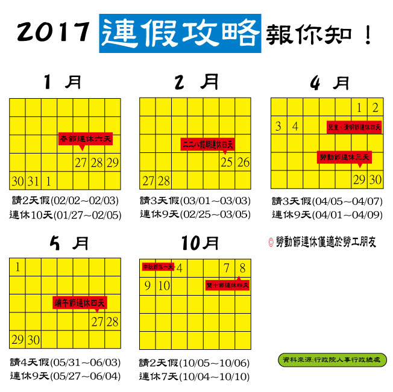

旅遊規劃
今年連假特別多，光是春節連假就長達6天，二二八假期、清明節也能連休四天，其他國定假日只要多請個2～3天假，又可以湊成連續假，難得有這麼多假期，您是否已經摩拳擦掌，準備安排一整年的旅遊行程了呢？
|  |
旅行雖然很有趣，但事先的行程規劃卻很花時間，如果是出國玩，還可以交給旅行社安排，國內旅行的話大部分都要靠自己。基本上安排行程的步驟大概是這樣：
1. 收集資料：透過網站、書籍、甚至是手機app，尋找景點、住宿等資訊，順便看看別人的評價
2. 安排行程：安排路線、交通工具、車程、住宿、行李清單、預算規劃
3. 輸出旅遊筆記：將路線、搭車時間、景點和住宿的地址／電話／開放時間……等重點資料印出來，或是存到手機中帶著走
除了到各大網站，或去找書收集資訊外，也有很多手機app提供旅遊景點、住宿、交通等訊息，大家可直接參考，另一個更費時間的是安排行程，資料來源這麼多，要把所有資料整合起來就得花很多功夫，還要考慮路線、交通工具、車程時間、停留時間……等條件，要安排出一個完美的旅遊計畫實在很不簡單，幸好現在已經有不少好用的行程規劃網站可以代勞，本篇就來介紹兩個中文介面，同時也好用的行程規劃網站，幫你搞定繁瑣的行程安排。
資料來源: goo.gl/FgXioI
以下介紹兩個台南旅遊網頁做參考:
【台南旅遊景點】台南一日遊、二日由十條推薦必玩路線懶人包 網址:https://tw.bring-you.info/tainan-travel-tips
【台南景點】台南旅遊景點推薦：給你簡易5open_in_new 網址:goo.gl/MNIyIT